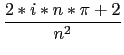
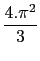

Déterminer les coefficients cn de Fourier de la fonction f périodique de
période 2. et définie sur [0;2.[ par f (x) = x2.
et définie sur [0;2.[ par f (x) = x2.
On tape :
assume(n,integer)
fourier_cn(x^2,x,2*pi,n)
On obtient :
((2*i)*pi*n+2)/n^2
Si on ne met pas assume(n,integer) on obtient une expression non simplifiée :
((2*i)*pi^2*n^2*exp((-i)*n*2*pi)+2*pi*n*exp((-i)*n*2*pi)+
(-i)*exp((-i)*n*2*pi)+i)/(pi*n^3)
que l'on peut simplifier en remplacant exp((-i)*n*2*pi) par 1 :
subst(ans(),exp((-i)*n*2*pi)=1)
On obtient :
((2*i)*pi^2*n^2+2*pi*n+-i+i)/pi/n^3
expression que l'on peut simplifier avec normal et on trouve finalement :
((2*i)*pi*n+2)/n^2
Il est donc préférable d'écrire assume(n,integer).
Donc si n  0 on a :
0 on a :
cn = 
Puis on tape :
fourier_cn(x^2,x,2*pi,0)
On obtient :
4*pi^2/3
Donc si n = 0 on a :
c0 = 
 f (x)e
f (x)e